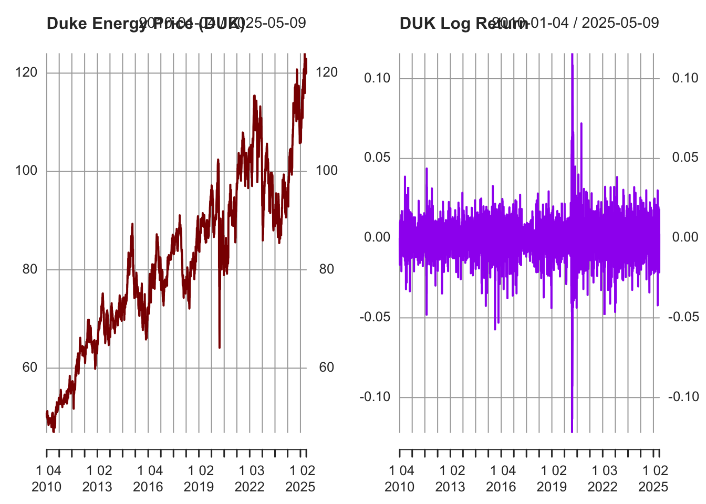
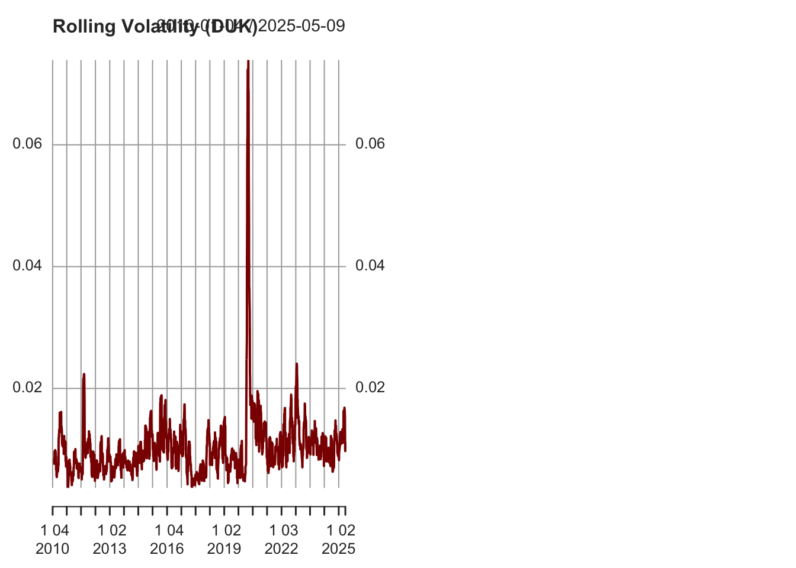
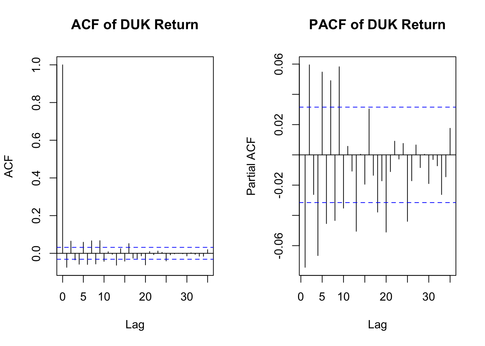
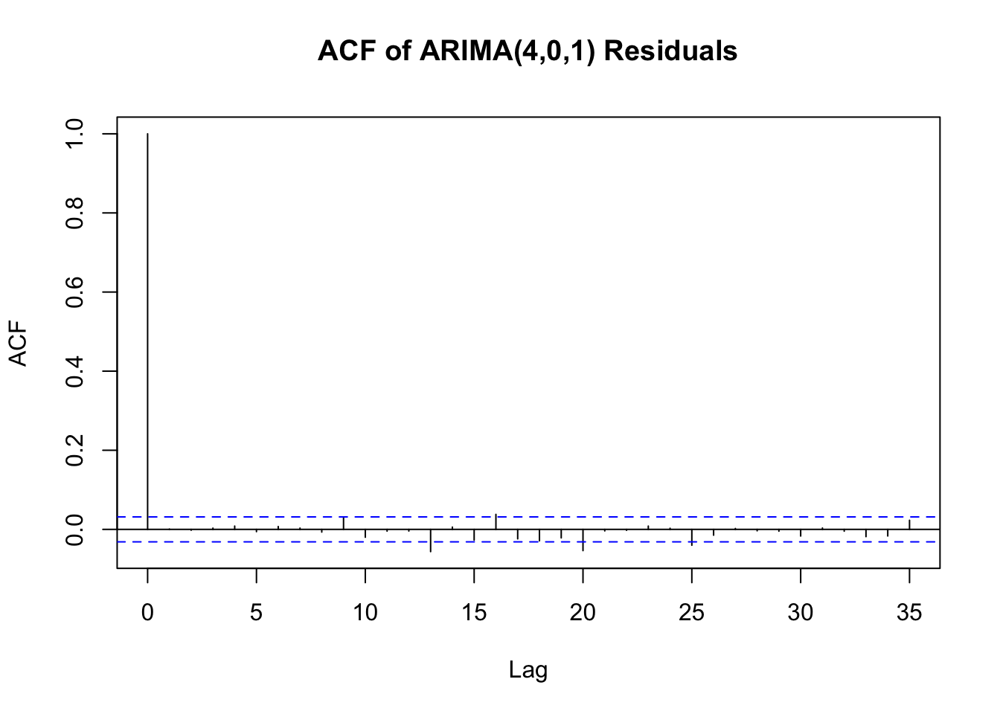
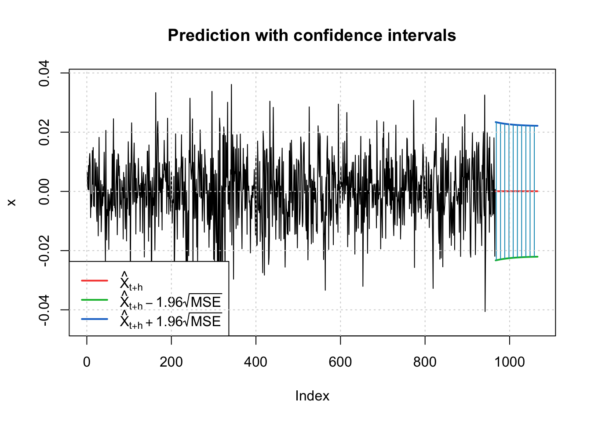
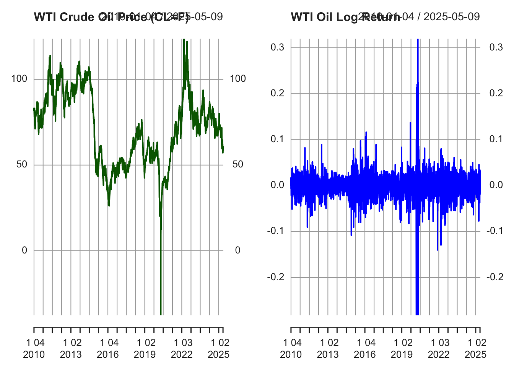
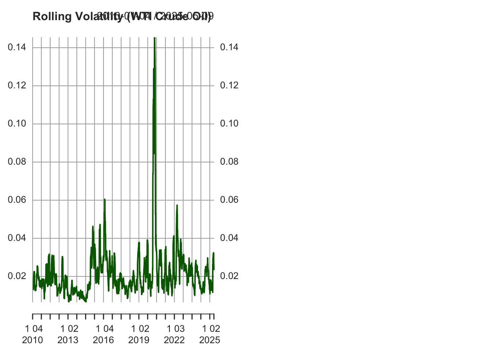
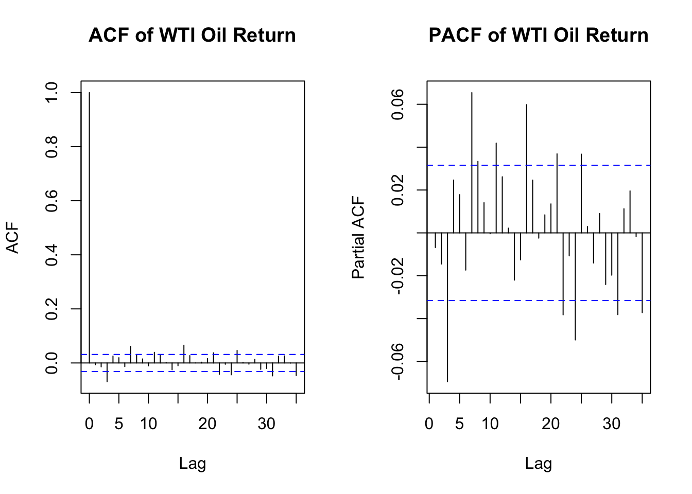
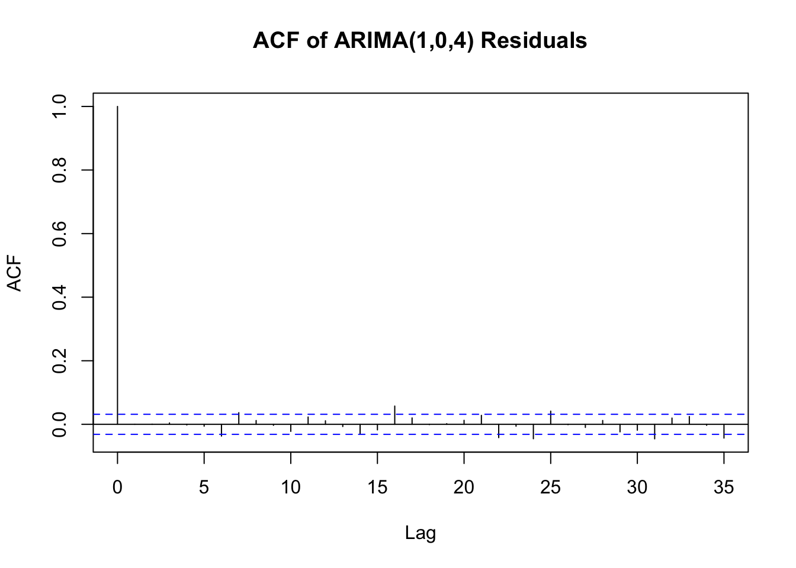
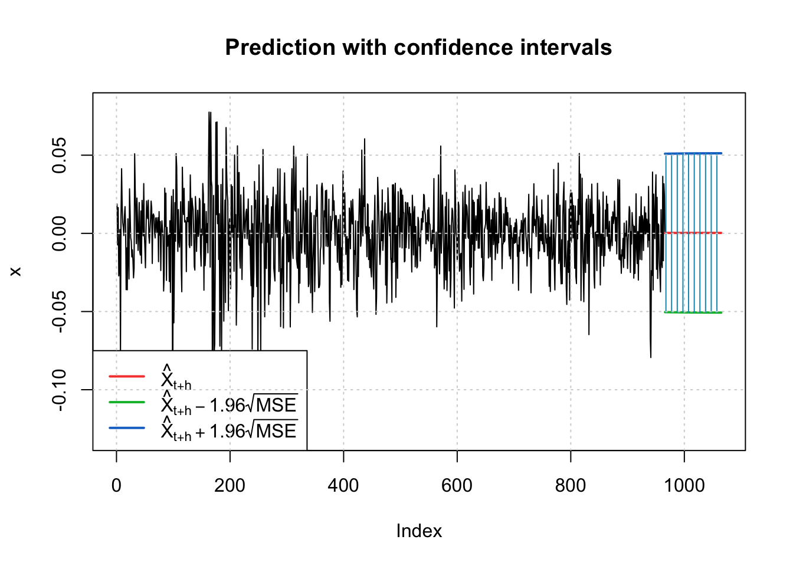

Code
library(quantmod)
library(tidyverse)
library(PerformanceAnalytics)
library(tseries)
library(zoo)
library(fGarch)
library(forecast)Ke Tian
Natural gas prices are known for their frequent and sometimes sharp fluctuations, often driven by seasonal demand, supply conditions, and geopolitical events. These changes don’t just impact the commodity market—they can also affect companies that rely on natural gas as a key input. Duke Energy (DUK), one of the largest utility companies in the U.S., uses a significant amount of natural gas for power generation. This makes it a good candidate to explore whether movements in natural gas prices might also show up in the behavior of its stock returns.
To better understand the nature of these fluctuations, we apply ARCH and GARCH models to both natural gas returns and DUK stock returns. These models are designed to capture volatility clustering—periods of calm followed by periods of turbulence—which is common in financial and commodity markets. By comparing the volatility patterns in both series, we aim to see whether there’s a shared structure or potential spillover in risk, which could have implications for investors and risk managers in energy-related sectors.
[1] "DUK"
ADF Test for DUK Return:
Augmented Dickey-Fuller Test
data: na.omit(duk_return)
Dickey-Fuller = -16.088, Lag order = 15, p-value = 0.01
alternative hypothesis: stationary
From the log return plot and the rolling volatility plot, it can be observed that the natural gas returns are highly volatile and unstable, especially during the period of severe volatility in the energy market in 2021-2022, when volatility rises rapidly, which is a typical characteristic of volatility clustering.The volatility of DUK stock is relatively mild, but it has a significant jump in early 2020 under the impact of the epidemic, followed by a gradual fall in volatility. Volatility then tapers off, also exhibiting mild volatility aggregation.

DUK’s ACF at lag1 has a significant peak, followed by a rapid decay, so q = 1, p can be 1,2,3,4, and we did not differentiate the data, so d = 0
ARIMA_c <- function(p_min, p_max, q_min, q_max, data) {
results <- matrix(nrow = 0, ncol = 6)
colnames(results) <- c("p", "d", "q", "AIC", "BIC", "AICc")
for (p in p_min:p_max) {
for (q in q_min:q_max) {
d <- 0
fit <- tryCatch({
Arima(data, order = c(p, d, q))
}, error = function(e) NULL)
if (!is.null(fit)) {
metrics <- c(p, d, q, AIC(fit), BIC(fit), fit$aicc)
results <- rbind(results, metrics)
}
}
}
results_df <- as.data.frame(results)
colnames(results_df) <- c("p", "d", "q", "AIC", "BIC", "AICc")
return(results_df)
}
output_duk <- ARIMA_c(0, 4, 0, 1, data = duk_return)
output_duk[which.min(output_duk$AIC), ] p d q AIC BIC AICc
metrics.9 4 0 1 -23365.51 -23321.7 -23365.48Based on the comparison results, the best model we chose is ARIMA (4, 0, 1) because it has the minimum AIC
Series: duk_return
ARIMA(2,0,2) with zero mean
Coefficients:
ar1 ar2 ma1 ma2
-0.7953 -0.4776 0.7276 0.5043
s.e. 0.2493 0.1034 0.2398 0.0892
sigma^2 = 0.0001393: log likelihood = 11666.52
AIC=-23323.03 AICc=-23323.02 BIC=-23291.74
Training set error measures:
ME RMSE MAE MPE MAPE MASE ACF1
Training set 0.0002264897 0.01179841 0.008195372 NaN Inf 0.6867761 0.000674026The best model we chose using auto.arim was ARIMA (2, 0, 2)
extract_model_summary <- function(model_output, label = "") {
cat("\n\n==================== ", label, " ====================\n")
start <- grep("Coefficients", model_output)
if (length(start) == 0) {
cat("No coefficients found in output.\n")
return()
}
end <- min(start + 10, length(model_output))
cat(model_output[start:end], sep = "\n")
}
extract_model_summary(out_put_401, "ARIMA(4,0,1)")
==================== ARIMA(4,0,1) ====================
Coefficients:
Estimate SE t.value p.value
ar1 -0.8425 0.0424 -19.8894 0.0000
ar2 0.0095 0.0212 0.4495 0.6531
ar3 0.0131 0.0212 0.6190 0.5359
ar4 -0.0971 0.0168 -5.7938 0.0000
ma1 0.7843 0.0400 19.6266 0.0000
xmean 0.0002 0.0002 1.3264 0.1848
sigma^2 estimated as 0.0001375346 on 3856 degrees of freedom
==================== ARIMA(2,0,2) ====================
Coefficients:
Estimate SE t.value p.value
ar1 -0.7770 0.2279 -3.4092 0.0007
ar2 -0.4784 0.1030 -4.6435 0.0000
ma1 0.7099 0.2191 3.2395 0.0012
ma2 0.5071 0.0916 5.5388 0.0000
xmean 0.0002 0.0002 1.1886 0.2347
sigma^2 estimated as 0.0001391524 on 3857 degrees of freedom
AIC = -6.03895 AICc = -6.038946 BIC = -6.029226 Ultimately, I will choose ARIMA (4, 0, 1) as the best model because it has lower AIC and BIC values, suggesting that the model strikes a better balance between fitting the data and complexity.
The standardized residual plot of the above model diagnosis shows that the center of the residual fluctuation is around the 0 line, indicating that the ARIMA model fits the mean part better, and there is an obvious fluctuation aggregation phenomenon in the plot, and the fluctuation of the residuals suddenly and significantly increases at t=2600, so we need to further modeling

Based on the ACF and PACF plots of the residual squared term, the ACF shows a significant peak at lag1, followed by a slow decline, while the PACF shows significant peaks at lag1 and lag3.
The slow decay in the ACF indicates that the previous volatility affects the current volatility, there is volatility persistence, which is the feature captured by the GARCH model.
So it is better to use GARCH because it can model both abruptness and persistence of volatility. This will provide a more comprehensive fitting and forecasting capability than the ARCH model.
Call:
garch(x = residuals_arima_duk, order = c(1, p), trace = FALSE)
Coefficient(s):
a0 a1 b1
3.105e-06 7.237e-02 9.030e-01 best model：GARCH(1, 1 )We compared the AIC of all the models and according to the results it shows that GARCH (1, 1) is the best model because it has lower AIC and it can fit the data better compared to other models
Series: duk_return
ARIMA(4,0,1) with drift
Coefficients:
ar1 ar2 ar3 ar4 ma1 intercept drift
-0.8425 0.0095 0.0131 -0.0971 0.7844 3e-04 0
s.e. 0.0423 0.0212 0.0213 0.0168 0.0399 4e-04 0
sigma^2 = 0.0001378: log likelihood = 11689.76
AIC=-23363.53 AICc=-23363.49 BIC=-23313.45
Training set error measures:
ME RMSE MAE MPE MAPE MASE ACF1
Training set -5.39054e-06 0.0117275 0.00819309 NaN Inf 0.6865849 0.0007816745
Title:
GARCH Modelling
Call:
garchFit(formula = ~garch(1, 1), data = arima_res_duk, trace = FALSE)
Mean and Variance Equation:
data ~ garch(1, 1)
<environment: 0x13888d388>
[data = arima_res_duk]
Conditional Distribution:
norm
Coefficient(s):
mu omega alpha1 beta1
5.3905e-05 3.1297e-06 7.2556e-02 9.0259e-01
Std. Errors:
based on Hessian
Error Analysis:
Estimate Std. Error t value Pr(>|t|)
mu 5.391e-05 1.555e-04 0.347 0.729
omega 3.130e-06 7.419e-07 4.219 2.46e-05 ***
alpha1 7.256e-02 8.796e-03 8.248 2.22e-16 ***
beta1 9.026e-01 1.258e-02 71.762 < 2e-16 ***
---
Signif. codes: 0 '***' 0.001 '**' 0.01 '*' 0.05 '.' 0.1 ' ' 1
Log Likelihood:
12160.82 normalized: 3.148841
Description:
Sun May 11 16:27:08 2025 by user:
Standardised Residuals Tests:
Statistic p-Value
Jarque-Bera Test R Chi^2 832.8920403 0.000000e+00
Shapiro-Wilk Test R W 0.9804906 0.000000e+00
Ljung-Box Test R Q(10) 43.5184881 4.016130e-06
Ljung-Box Test R Q(15) 46.8029170 3.959327e-05
Ljung-Box Test R Q(20) 52.5644024 9.416277e-05
Ljung-Box Test R^2 Q(10) 3.0913846 9.791909e-01
Ljung-Box Test R^2 Q(15) 5.9205795 9.810511e-01
Ljung-Box Test R^2 Q(20) 16.0757641 7.119130e-01
LM Arch Test R TR^2 3.4068210 9.919266e-01
Information Criterion Statistics:
AIC BIC SIC HQIC
-6.295611 -6.289128 -6.295613 -6.293309
Box-Ljung test
data: std_res
X-squared = 43.518, df = 10, p-value = 4.016e-06
Box-Ljung test
data: std_res^2
X-squared = 3.0914, df = 10, p-value = 0.9792The Box-Ljung test for standardized residuals gives a very small p-value (p = 3.717e-06), indicating that significant autocorrelation still exists in the residuals. The Box-Ljung test for the squared standardized residuals shows a large p-value (p = 0.9803) indicating that there is no significant autocorrelation in the squared residuals, which suggests that the GARCH(1,1) model is successful in capturing the aggregation effect of volatility (conditional heteroskedasticity) in the data, and that it is successful in modeling volatility. ## Equation
\[ x_t = 0.0003 - 0.8465 x_{t-1} + 0.0103 x_{t-2} + 0.0140 x_{t-3} - 0.0969 x_{t-4} + w_t + 0.7894 w_{t-1} \] \[ \sigma_t^2 = 3.0957 \times 10^{-6} + 0.072697 \cdot w_{t-1}^2 + 0.90288 \cdot \sigma_{t-1}^2 \]

meanForecast meanError standardDeviation lowerInterval upperInterval
1 5.39054e-05 0.01191671 0.01191671 -0.02330242 0.02341023
2 5.39054e-05 0.01189992 0.01189992 -0.02326951 0.02337732
3 5.39054e-05 0.01188352 0.01188352 -0.02323738 0.02334519
4 5.39054e-05 0.01186751 0.01186751 -0.02320599 0.02331380
5 5.39054e-05 0.01185188 0.01185188 -0.02317535 0.02328316
6 5.39054e-05 0.01183661 0.01183661 -0.02314543 0.02325324
7 5.39054e-05 0.01182171 0.01182171 -0.02311622 0.02322403
8 5.39054e-05 0.01180716 0.01180716 -0.02308770 0.02319551
9 5.39054e-05 0.01179295 0.01179295 -0.02305985 0.02316766
10 5.39054e-05 0.01177908 0.01177908 -0.02303266 0.02314047
11 5.39054e-05 0.01176553 0.01176553 -0.02300612 0.02311393
12 5.39054e-05 0.01175231 0.01175231 -0.02298021 0.02308802
13 5.39054e-05 0.01173941 0.01173941 -0.02295491 0.02306272
14 5.39054e-05 0.01172681 0.01172681 -0.02293021 0.02303803
15 5.39054e-05 0.01171451 0.01171451 -0.02290611 0.02301392
16 5.39054e-05 0.01170250 0.01170250 -0.02288258 0.02299039
17 5.39054e-05 0.01169078 0.01169078 -0.02285961 0.02296742
18 5.39054e-05 0.01167934 0.01167934 -0.02283718 0.02294500
19 5.39054e-05 0.01166818 0.01166818 -0.02281530 0.02292311
20 5.39054e-05 0.01165728 0.01165728 -0.02279394 0.02290175
21 5.39054e-05 0.01164664 0.01164664 -0.02277309 0.02288090
22 5.39054e-05 0.01163626 0.01163626 -0.02275274 0.02286055
23 5.39054e-05 0.01162612 0.01162612 -0.02273288 0.02284069
24 5.39054e-05 0.01161623 0.01161623 -0.02271349 0.02282130
25 5.39054e-05 0.01160658 0.01160658 -0.02269457 0.02280238
26 5.39054e-05 0.01159716 0.01159716 -0.02267611 0.02278392
27 5.39054e-05 0.01158797 0.01158797 -0.02265809 0.02276590
28 5.39054e-05 0.01157899 0.01157899 -0.02264050 0.02274831
29 5.39054e-05 0.01157024 0.01157024 -0.02262334 0.02273115
30 5.39054e-05 0.01156169 0.01156169 -0.02260660 0.02271441
31 5.39054e-05 0.01155335 0.01155335 -0.02259025 0.02269806
32 5.39054e-05 0.01154522 0.01154522 -0.02257430 0.02268211
33 5.39054e-05 0.01153728 0.01153728 -0.02255874 0.02266655
34 5.39054e-05 0.01152953 0.01152953 -0.02254356 0.02265137
35 5.39054e-05 0.01152197 0.01152197 -0.02252874 0.02263655
36 5.39054e-05 0.01151459 0.01151459 -0.02251428 0.02262209
37 5.39054e-05 0.01150739 0.01150739 -0.02250017 0.02260798
38 5.39054e-05 0.01150037 0.01150037 -0.02248640 0.02259421
39 5.39054e-05 0.01149351 0.01149351 -0.02247297 0.02258078
40 5.39054e-05 0.01148683 0.01148683 -0.02245986 0.02256767
41 5.39054e-05 0.01148030 0.01148030 -0.02244707 0.02255488
42 5.39054e-05 0.01147394 0.01147394 -0.02243460 0.02254241
43 5.39054e-05 0.01146772 0.01146772 -0.02242242 0.02253023
44 5.39054e-05 0.01146166 0.01146166 -0.02241054 0.02251835
45 5.39054e-05 0.01145575 0.01145575 -0.02239896 0.02250677
46 5.39054e-05 0.01144998 0.01144998 -0.02238765 0.02249546
47 5.39054e-05 0.01144436 0.01144436 -0.02237662 0.02248443
48 5.39054e-05 0.01143886 0.01143886 -0.02236586 0.02247367
49 5.39054e-05 0.01143351 0.01143351 -0.02235536 0.02246317
50 5.39054e-05 0.01142828 0.01142828 -0.02234511 0.02245292
51 5.39054e-05 0.01142318 0.01142318 -0.02233512 0.02244293
52 5.39054e-05 0.01141821 0.01141821 -0.02232537 0.02243318
53 5.39054e-05 0.01141336 0.01141336 -0.02231586 0.02242367
54 5.39054e-05 0.01140862 0.01140862 -0.02230658 0.02241439
55 5.39054e-05 0.01140400 0.01140400 -0.02229753 0.02240534
56 5.39054e-05 0.01139950 0.01139950 -0.02228870 0.02239651
57 5.39054e-05 0.01139510 0.01139510 -0.02228009 0.02238790
58 5.39054e-05 0.01139082 0.01139082 -0.02227168 0.02237950
59 5.39054e-05 0.01138663 0.01138663 -0.02226349 0.02237130
60 5.39054e-05 0.01138255 0.01138255 -0.02225549 0.02236330
61 5.39054e-05 0.01137857 0.01137857 -0.02224769 0.02235550
62 5.39054e-05 0.01137469 0.01137469 -0.02224008 0.02234789
63 5.39054e-05 0.01137091 0.01137091 -0.02223266 0.02234047
64 5.39054e-05 0.01136721 0.01136721 -0.02222542 0.02233323
65 5.39054e-05 0.01136361 0.01136361 -0.02221836 0.02232617
66 5.39054e-05 0.01136009 0.01136009 -0.02221147 0.02231928
67 5.39054e-05 0.01135666 0.01135666 -0.02220475 0.02231256
68 5.39054e-05 0.01135332 0.01135332 -0.02219819 0.02230600
69 5.39054e-05 0.01135006 0.01135006 -0.02219180 0.02229961
70 5.39054e-05 0.01134688 0.01134688 -0.02218556 0.02229337
71 5.39054e-05 0.01134377 0.01134377 -0.02217948 0.02228729
72 5.39054e-05 0.01134074 0.01134074 -0.02217354 0.02228135
73 5.39054e-05 0.01133779 0.01133779 -0.02216776 0.02227557
74 5.39054e-05 0.01133491 0.01133491 -0.02216211 0.02226992
75 5.39054e-05 0.01133210 0.01133210 -0.02215660 0.02226441
76 5.39054e-05 0.01132936 0.01132936 -0.02215123 0.02225904
77 5.39054e-05 0.01132669 0.01132669 -0.02214599 0.02225380
78 5.39054e-05 0.01132408 0.01132408 -0.02214088 0.02224870
79 5.39054e-05 0.01132154 0.01132154 -0.02213590 0.02224371
80 5.39054e-05 0.01131906 0.01131906 -0.02213104 0.02223885
81 5.39054e-05 0.01131664 0.01131664 -0.02212630 0.02223411
82 5.39054e-05 0.01131428 0.01131428 -0.02212167 0.02222948
83 5.39054e-05 0.01131198 0.01131198 -0.02211716 0.02222497
84 5.39054e-05 0.01130973 0.01130973 -0.02211276 0.02222057
85 5.39054e-05 0.01130754 0.01130754 -0.02210847 0.02221628
86 5.39054e-05 0.01130541 0.01130541 -0.02210429 0.02221210
87 5.39054e-05 0.01130333 0.01130333 -0.02210021 0.02220802
88 5.39054e-05 0.01130129 0.01130129 -0.02209623 0.02220404
89 5.39054e-05 0.01129931 0.01129931 -0.02209234 0.02220015
90 5.39054e-05 0.01129738 0.01129738 -0.02208856 0.02219637
91 5.39054e-05 0.01129550 0.01129550 -0.02208486 0.02219267
92 5.39054e-05 0.01129366 0.01129366 -0.02208126 0.02218907
93 5.39054e-05 0.01129187 0.01129187 -0.02207775 0.02218556
94 5.39054e-05 0.01129012 0.01129012 -0.02207432 0.02218213
95 5.39054e-05 0.01128841 0.01128841 -0.02207098 0.02217879
96 5.39054e-05 0.01128675 0.01128675 -0.02206772 0.02217553
97 5.39054e-05 0.01128513 0.01128513 -0.02206454 0.02217235
98 5.39054e-05 0.01128355 0.01128355 -0.02206144 0.02216925
99 5.39054e-05 0.01128201 0.01128201 -0.02205842 0.02216623
100 5.39054e-05 0.01128050 0.01128050 -0.02205547 0.02216328[1] "CL=F"
ADF Test for WTI Oil Return:
Augmented Dickey-Fuller Test
data: na.omit(oil_return)
Dickey-Fuller = -13.639, Lag order = 15, p-value = 0.01
alternative hypothesis: stationary
The ADF test shows that the p-value is significantly less than 0.05 and the logarithmic yield series of WTI is smooth.
The raw price volatility was high, especially during the 2020 epidemic shock, and there were obvious structural fluctuations, but the price itself is not a smooth series.
The logarithmic yield plot shows that the volatility clustering has periods of very small returns and periods of sudden volatility, with very high amplitudes during the 2020 epidemic.
The rolling standard deviation plot shows significant changes in volatility over time, with volatility spiking to about 0.13 around 2020, much higher than the 0.02 ~ 0.05 in normal times, with significant conditional heteroskedasticity

According to ACF and PACF, we define p = 3, d = 0, q = 1
ARIMA_c <- function(p_min, p_max, q_min, q_max, data) {
results <- matrix(nrow = 0, ncol = 6)
colnames(results) <- c("p", "d", "q", "AIC", "BIC", "AICc")
for (p in p_min:p_max) {
for (q in q_min:q_max) {
d <- 0
if ((p + d + q) <= 6) {
fit <- tryCatch({
Arima(na.omit(data), order = c(p, d, q))
}, error = function(e) NULL)
if (!is.null(fit)) {
metrics <- c(p, d, q, AIC(fit), BIC(fit), fit$aicc)
results <- rbind(results, metrics)
}
}
}
}
results_df <- as.data.frame(results)
colnames(results_df) <- c("p", "d", "q", "AIC", "BIC", "AICc")
return(results_df)
}
output <- ARIMA_c(0, 5, 0, 5, data = oil_return)
output[which.min(output$AIC), ] p d q AIC BIC AICc
metrics.10 1 0 4 -17345.3 -17301.49 -17345.27Based on the minimum AIC value, we get the best fitting model when ARIMA (1, 0, 4)
Series: oil_return
ARIMA(0,0,0) with zero mean
sigma^2 = 0.0006581: log likelihood = 8660.14
AIC=-17318.27 AICc=-17318.27 BIC=-17312.01
Training set error measures:
ME RMSE MAE MPE MAPE MASE ACF1
Training set 8.088928e-05 0.02565341 0.01685628 100 100 0.6963552 -0.006833729ARIMA (1, 0, 1) at the best fitting model selected by Auto.arima ### Model Diagnotic
extract_model_summary <- function(model_output, label = "") {
cat("\n\n==================== ", label, " ====================\n")
start <- grep("Coefficients", model_output)
if (length(start) == 0) {
cat("No coefficients found in output.\n")
return()
}
end <- min(start + 10, length(model_output))
cat(model_output[start:end], sep = "\n")
}
extract_model_summary(out_put_104, "ARIMA(1,0,4)")
==================== ARIMA(1,0,4) ====================
Coefficients:
Estimate SE t.value p.value
ar1 0.8978 0.0345 26.0558 0.0000
ma1 -0.9079 0.0376 -24.1222 0.0000
ma2 -0.0085 0.0216 -0.3937 0.6938
ma3 -0.0636 0.0221 -2.8816 0.0040
ma4 0.1009 0.0168 5.9917 0.0000
xmean 0.0001 0.0005 0.1536 0.8779
sigma^2 estimated as 0.0006514664 on 3853 degrees of freedom
==================== ARIMA(1,0,1) ====================
Coefficients:
Estimate SE t.value p.value
ar1 -0.0033 NaN NaN NaN
ma1 -0.0037 NaN NaN NaN
xmean 0.0001 4e-04 0.1971 0.8438
sigma^2 estimated as 0.0006580599 on 3856 degrees of freedom
AIC = -4.486264 AICc = -4.486263 BIC = -4.479778
Finally, I will choose ARIMA (1, 0, 4) as the best model because it has the lowest AIC and the coefficients are more significant
The standardized residual plots for the model ARIMA (1, 0, 4) show that residual fluctuations are significantly more dramatic in some intervals than in others, reflecting the phenomenon of fluctuation aggregation, and that although the ARIMA model captures the mean structure, the phenomenon of heteroskedasticity is still present in the residuals. The variance of the residuals varies over time and is not stable. There are characteristics of clustered large fluctuations alternating with periods of stability. We need further GARCH modeling

Based on the ACF and PACF plots of the residual squared terms, the ACF shows a significant peak at lag 1, and the PACF shows significant peaks at la1 and lag 3. This indicates that there is a strong ARCH effect and fluctuation persistence in the data.
Call:
garch(x = residuals_arima_oil, order = c(1, p), trace = FALSE)
Coefficient(s):
a0 a1 b1
1.322e-05 1.183e-01 8.622e-01 best model：GARCH(1, 1 )Based on the results we know that the best model is GARCH (1, 1) because it has the smallest AIC and fits the data better compared to other models
Series: oil_return
ARIMA(1,0,4) with drift
Coefficients:
ar1 ma1 ma2 ma3 ma4 intercept drift
0.8973 -0.9075 -0.0085 -0.0635 0.1007 -2e-04 0
s.e. 0.0415 0.0432 0.0216 0.0221 0.0169 1e-03 0
sigma^2 = 0.0006526: log likelihood = 8679.68
AIC=-17343.35 AICc=-17343.32 BIC=-17293.29
Training set error measures:
ME RMSE MAE MPE MAPE MASE ACF1
Training set 4.026767e-05 0.02552366 0.01690032 NaN Inf 0.6981748 3.251813e-05
Title:
GARCH Modelling
Call:
garchFit(formula = ~garch(1, 1), data = arima_res_oil, trace = FALSE)
Mean and Variance Equation:
data ~ garch(1, 1)
<environment: 0x138b21038>
[data = arima_res_oil]
Conditional Distribution:
norm
Coefficient(s):
mu omega alpha1 beta1
2.7376e-04 1.3329e-05 1.1900e-01 8.6131e-01
Std. Errors:
based on Hessian
Error Analysis:
Estimate Std. Error t value Pr(>|t|)
mu 2.738e-04 2.939e-04 0.932 0.352
omega 1.333e-05 2.571e-06 5.185 2.16e-07 ***
alpha1 1.190e-01 1.164e-02 10.224 < 2e-16 ***
beta1 8.613e-01 1.317e-02 65.390 < 2e-16 ***
---
Signif. codes: 0 '***' 0.001 '**' 0.01 '*' 0.05 '.' 0.1 ' ' 1
Log Likelihood:
9490.825 normalized: 2.4594
Description:
Sun May 11 16:27:11 2025 by user:
Standardised Residuals Tests:
Statistic p-Value
Jarque-Bera Test R Chi^2 1623.9012435 0.00000000
Shapiro-Wilk Test R W 0.9734328 0.00000000
Ljung-Box Test R Q(10) 18.8141412 0.04268787
Ljung-Box Test R Q(15) 20.1981035 0.16446420
Ljung-Box Test R Q(20) 25.8308924 0.17146991
Ljung-Box Test R^2 Q(10) 7.8830718 0.64025724
Ljung-Box Test R^2 Q(15) 14.7498908 0.46957863
Ljung-Box Test R^2 Q(20) 16.6485844 0.67566041
LM Arch Test R TR^2 11.1667669 0.51468344
Information Criterion Statistics:
AIC BIC SIC HQIC
-4.916727 -4.910241 -4.916730 -4.914424
Box-Ljung test
data: std_res
X-squared = 18.814, df = 10, p-value = 0.04269
Box-Ljung test
data: std_res^2
X-squared = 7.8831, df = 10, p-value = 0.6403The Box-Ljung test shows that there is still a slight autocorrelation in the standardized residuals of the model (p-value = 0.043), suggesting that there may be room for further optimization of the ARIMA mean equation. However, the squares of the standardized residuals are not significantly autocorrelated across lags (p-value = 0.642), indicating that the GARCH variance equation has successfully captured the conditional heteroskedasticity characteristics of the data. Thus, the model is effective in modeling volatility, the residual behavior is close to white noise, and the GARCH part performs well. ## Equation \[ x_t = 0.8957 x_{t-1} - 0.9047 \epsilon_{t-1} - 0.0104 \epsilon_{t-2} - 0.0638 \epsilon_{t-3} + 0.1020 \epsilon_{t-4} + \epsilon_t \]
\[ \sigma_t^2 = 1.324 \times 10^{-5} + 0.1187 \cdot \epsilon_{t-1}^2 + 0.8618 \cdot \sigma_{t-1}^2 \]

meanForecast meanError standardDeviation lowerInterval upperInterval
1 0.0002737644 0.02583710 0.02583710 -0.05036602 0.05091355
2 0.0002737644 0.02584071 0.02584071 -0.05037309 0.05092062
3 0.0002737644 0.02584425 0.02584425 -0.05038003 0.05092756
4 0.0002737644 0.02584771 0.02584771 -0.05038682 0.05093435
5 0.0002737644 0.02585111 0.02585111 -0.05039349 0.05094101
6 0.0002737644 0.02585444 0.02585444 -0.05040002 0.05094754
7 0.0002737644 0.02585771 0.02585771 -0.05040642 0.05095394
8 0.0002737644 0.02586091 0.02586091 -0.05041269 0.05096022
9 0.0002737644 0.02586405 0.02586405 -0.05041884 0.05096637
10 0.0002737644 0.02586712 0.02586712 -0.05042487 0.05097239
11 0.0002737644 0.02587014 0.02587014 -0.05043077 0.05097830
12 0.0002737644 0.02587309 0.02587309 -0.05043657 0.05098409
13 0.0002737644 0.02587599 0.02587599 -0.05044224 0.05098977
14 0.0002737644 0.02587883 0.02587883 -0.05044781 0.05099533
15 0.0002737644 0.02588161 0.02588161 -0.05045326 0.05100079
16 0.0002737644 0.02588434 0.02588434 -0.05045861 0.05100613
17 0.0002737644 0.02588701 0.02588701 -0.05046385 0.05101138
18 0.0002737644 0.02588963 0.02588963 -0.05046898 0.05101651
19 0.0002737644 0.02589220 0.02589220 -0.05047402 0.05102155
20 0.0002737644 0.02589472 0.02589472 -0.05047895 0.05102648
21 0.0002737644 0.02589719 0.02589719 -0.05048379 0.05103132
22 0.0002737644 0.02589961 0.02589961 -0.05048853 0.05103606
23 0.0002737644 0.02590198 0.02590198 -0.05049318 0.05104071
24 0.0002737644 0.02590430 0.02590430 -0.05049774 0.05104527
25 0.0002737644 0.02590658 0.02590658 -0.05050220 0.05104973
26 0.0002737644 0.02590882 0.02590882 -0.05050658 0.05105411
27 0.0002737644 0.02591101 0.02591101 -0.05051087 0.05105840
28 0.0002737644 0.02591315 0.02591315 -0.05051508 0.05106261
29 0.0002737644 0.02591526 0.02591526 -0.05051920 0.05106673
30 0.0002737644 0.02591732 0.02591732 -0.05052325 0.05107077
31 0.0002737644 0.02591934 0.02591934 -0.05052721 0.05107474
32 0.0002737644 0.02592132 0.02592132 -0.05053109 0.05107862
33 0.0002737644 0.02592326 0.02592326 -0.05053490 0.05108243
34 0.0002737644 0.02592517 0.02592517 -0.05053863 0.05108616
35 0.0002737644 0.02592703 0.02592703 -0.05054229 0.05108982
36 0.0002737644 0.02592886 0.02592886 -0.05054587 0.05109340
37 0.0002737644 0.02593066 0.02593066 -0.05054939 0.05109692
38 0.0002737644 0.02593241 0.02593241 -0.05055283 0.05110036
39 0.0002737644 0.02593414 0.02593414 -0.05055621 0.05110374
40 0.0002737644 0.02593583 0.02593583 -0.05055952 0.05110705
41 0.0002737644 0.02593748 0.02593748 -0.05056277 0.05111030
42 0.0002737644 0.02593911 0.02593911 -0.05056595 0.05111348
43 0.0002737644 0.02594070 0.02594070 -0.05056907 0.05111660
44 0.0002737644 0.02594226 0.02594226 -0.05057212 0.05111965
45 0.0002737644 0.02594378 0.02594378 -0.05057512 0.05112265
46 0.0002737644 0.02594528 0.02594528 -0.05057806 0.05112559
47 0.0002737644 0.02594675 0.02594675 -0.05058094 0.05112846
48 0.0002737644 0.02594819 0.02594819 -0.05058376 0.05113129
49 0.0002737644 0.02594960 0.02594960 -0.05058653 0.05113405
50 0.0002737644 0.02595099 0.02595099 -0.05058924 0.05113677
51 0.0002737644 0.02595234 0.02595234 -0.05059190 0.05113942
52 0.0002737644 0.02595367 0.02595367 -0.05059450 0.05114203
53 0.0002737644 0.02595498 0.02595498 -0.05059706 0.05114459
54 0.0002737644 0.02595626 0.02595626 -0.05059956 0.05114709
55 0.0002737644 0.02595751 0.02595751 -0.05060202 0.05114954
56 0.0002737644 0.02595874 0.02595874 -0.05060442 0.05115195
57 0.0002737644 0.02595994 0.02595994 -0.05060678 0.05115431
58 0.0002737644 0.02596112 0.02596112 -0.05060909 0.05115662
59 0.0002737644 0.02596228 0.02596228 -0.05061136 0.05115889
60 0.0002737644 0.02596341 0.02596341 -0.05061358 0.05116111
61 0.0002737644 0.02596452 0.02596452 -0.05061576 0.05116329
62 0.0002737644 0.02596561 0.02596561 -0.05061790 0.05116542
63 0.0002737644 0.02596668 0.02596668 -0.05061999 0.05116752
64 0.0002737644 0.02596772 0.02596772 -0.05062204 0.05116957
65 0.0002737644 0.02596875 0.02596875 -0.05062405 0.05117158
66 0.0002737644 0.02596976 0.02596976 -0.05062602 0.05117355
67 0.0002737644 0.02597074 0.02597074 -0.05062796 0.05117548
68 0.0002737644 0.02597171 0.02597171 -0.05062985 0.05117738
69 0.0002737644 0.02597266 0.02597266 -0.05063171 0.05117924
70 0.0002737644 0.02597359 0.02597359 -0.05063353 0.05118106
71 0.0002737644 0.02597450 0.02597450 -0.05063531 0.05118284
72 0.0002737644 0.02597539 0.02597539 -0.05063706 0.05118459
73 0.0002737644 0.02597626 0.02597626 -0.05063878 0.05118631
74 0.0002737644 0.02597712 0.02597712 -0.05064046 0.05118799
75 0.0002737644 0.02597796 0.02597796 -0.05064211 0.05118964
76 0.0002737644 0.02597879 0.02597879 -0.05064372 0.05119125
77 0.0002737644 0.02597959 0.02597959 -0.05064531 0.05119283
78 0.0002737644 0.02598039 0.02598039 -0.05064686 0.05119439
79 0.0002737644 0.02598116 0.02598116 -0.05064838 0.05119591
80 0.0002737644 0.02598192 0.02598192 -0.05064987 0.05119740
81 0.0002737644 0.02598267 0.02598267 -0.05065133 0.05119886
82 0.0002737644 0.02598340 0.02598340 -0.05065277 0.05120030
83 0.0002737644 0.02598412 0.02598412 -0.05065417 0.05120170
84 0.0002737644 0.02598482 0.02598482 -0.05065555 0.05120308
85 0.0002737644 0.02598551 0.02598551 -0.05065690 0.05120443
86 0.0002737644 0.02598619 0.02598619 -0.05065822 0.05120575
87 0.0002737644 0.02598685 0.02598685 -0.05065952 0.05120705
88 0.0002737644 0.02598750 0.02598750 -0.05066079 0.05120832
89 0.0002737644 0.02598813 0.02598813 -0.05066204 0.05120957
90 0.0002737644 0.02598876 0.02598876 -0.05066326 0.05121079
91 0.0002737644 0.02598937 0.02598937 -0.05066446 0.05121199
92 0.0002737644 0.02598997 0.02598997 -0.05066564 0.05121317
93 0.0002737644 0.02599056 0.02599056 -0.05066679 0.05121432
94 0.0002737644 0.02599113 0.02599113 -0.05066792 0.05121545
95 0.0002737644 0.02599170 0.02599170 -0.05066902 0.05121655
96 0.0002737644 0.02599225 0.02599225 -0.05067011 0.05121764
97 0.0002737644 0.02599279 0.02599279 -0.05067117 0.05121870
98 0.0002737644 0.02599332 0.02599332 -0.05067222 0.05121974
99 0.0002737644 0.02599385 0.02599385 -0.05067324 0.05122077
100 0.0002737644 0.02599436 0.02599436 -0.05067424 0.05122177